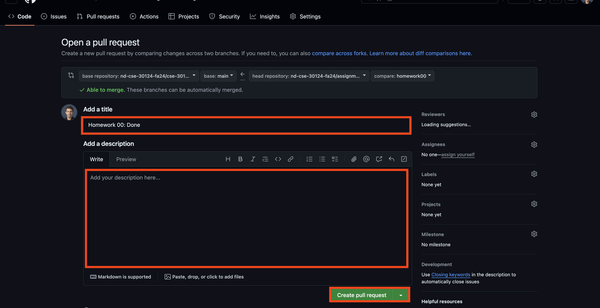

Bonus Homework: ChatGPT2 (2 bonus pts.)
Task 1: Blog Post¶
For this bonus homework, just follow and implement the instructions in this blog post:
Then either bring in your working model to demonstrate to me or a TA, or send a video of it working on your machine, and submit your own version of the code.
To submit your answers, you will need add your bonus_homework.ipynb file
in the bonus_homework folder of your assignments repository:
Answer the questions in your notebook file using the method of your choice and once you are finished, follow the instructions below to submit your notebook.
-
For this class, you must use a separate [git] branch for each assignment. This means that the work for each reading and challenge must be done in a separate branch. To create and checkout a new branch, you can do the following:
$ git checkout main # Make sure we are in master branch $ git pull --rebase # Make sure we are up-to-date with github repository $ git checkout -b bonus_homework # Create bonus_homework branch and check it outOnce you do the above, you should see the following output for the git-branch command:
$ git branch main homework00 homework01 homework02 homework03 homework04 homework05 bonus_homeworkThe
*indicates that we are currently on thebonus_homeworkbranch. -
Once you have your notebook filled out, you need to add, commit the file, and push your commits to GitHub:
$ git add bonus_homework.ipynb # Add answers.json to staging area $ git commit -m "Bonus Homework: Done" # Commit work $ git push -u origin bonus_homework # Push branch to GitHubNote: You may edit and commit changes to your branch as many times as you wish. Just make sure all of your work goes in the appropriate branch and then perform agit pushwhen you are done. -
When you are ready for your final submission, you need to create a pull request via the GitHub interface:
-
First, go to your repository's Branches page and then press the New pull request button for the appropriate branch:

-
Next, edit the pull request title to "Bonus Homework", write a comment if necessary and then press the "Create pull request" button.
 -
Finally, assign the pull request to the teaching assistant assigned to you for the given week.

-
Graders¶
Please refer to the Homework 09 TA List to determine who your grader is for this week.
Once you have made the pull request, the instructor or teaching assistant can verify your work and provide feedback via the discussion form inside the pull request. If necessary, you can update your submission by simply committing and pushing to the appropriate branch; the pull request will automatically be updated to match your latest work.
When all work is graded, the grader will merge your branch and close the pull request.
Note: Please do not merge your own pull request. This makes it more difficult for the graders to keep track of what needs to be graded.
Qualitative Feedback¶
The purpose of this workflow is to provide you with better feedback. Instead of simply determining if your work is correct, the instructor will attempt to provide you with more qualitative feedback such as whether or not you used good programming practices or if your code could be improved or organized better.
The hope is that this will help you grow as programmers and develop some taste :).